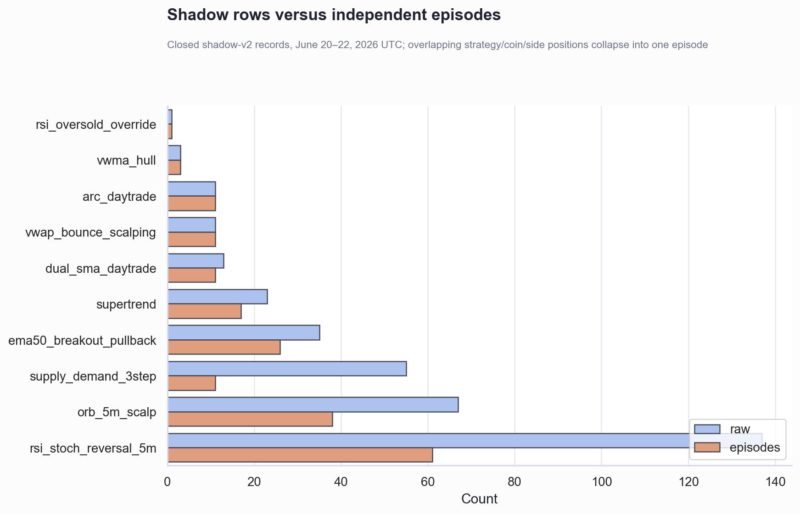
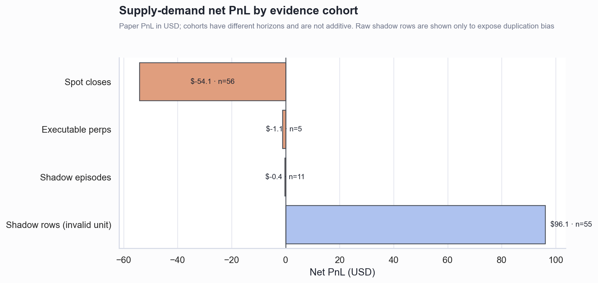
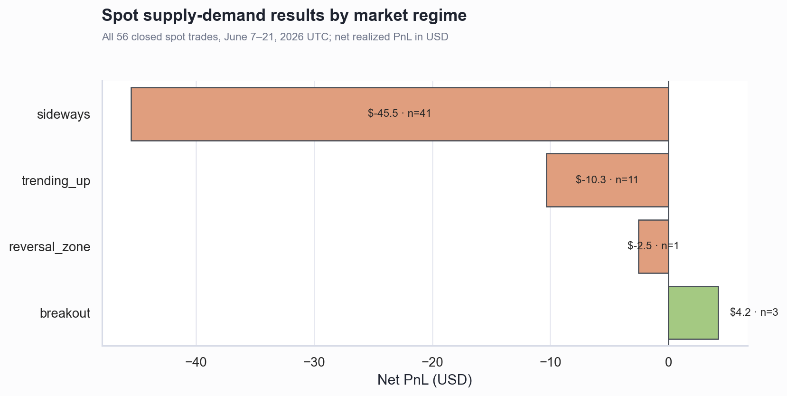

Trade sample review
Executive Summary
- The shadow total is materially overstated. Shadow v2 has 356 closed rows but only 190 non-overlapping episodes. For
supply_demand_3step, 55 rows collapse to 11 episodes; its apparent +$96.11 becomes $-0.37 using the first entry per episode. - There is not enough clean evidence to scale perp supply-demand. It has 11 shadow episodes (PF 0.95) and only 5 executable perp closes (PF 0.75, $-1.15). Keep it paper/canary-sized.
- There is enough evidence to stop the current broad spot supply-demand gate. Across 56 closes, 30 pairs, 3 venues and 9 entry days, it lost $54.13, won 21.4%, and produced PF 0.33; every venue was negative.
- Overall shadow history is too short for durable tuning. The episode-adjusted sample covers only three entry days. Counts support triage, not promotion or large parameter changes.
Repeated shadow scans created false confidence
The 45 overlapping MSTR supply-demand rows are one continuous opportunity, not 45 independent trials. They contributed most of the headline profit. Episode-level measurement reverses the supply-demand conclusion from strongly positive to approximately flat/negative.


Spot supply-demand fails across the deployed breadth
The loss is not isolated to one exchange: Binance lost $25.92, Crypto.com $20.20, and Bybit $8.02. Sideways trades account for 41 of 56 closes and −$45.50; trending-up also lost $10.34. Breakout is +$4.24 but has only three trades—far too few to validate an exception.

Sample sufficiency by decision
| Decision | Clean sample | Coverage | Assessment |
|---|---|---|---|
| Scale supply-demand perps | 11 shadow episodes + 5 executable closes | 3 days / 4 coins | No |
| Keep current broad spot supply-demand gate | 56 executable closes | 9 days / 30 pairs / 3 venues | No—stop it |
| Enable breakout-only spot gate | 3 closes | 3 pairs | No—paper test only |
| Tune other shadow strategies | 1–61 episodes each | 2–3 days | Directional triage only |
The 95% Wilson interval for spot supply-demand win rate is 12.7%–33.8%; the bootstrap 95% interval for mean PnL is $-1.44 to $-0.46. This is strong evidence against the deployed broad spot policy. The corresponding shadow-episode win-rate interval is 21.3%–72.0%, which is too wide to support scaling.
Recommended changes
- ImmediateDisable new spot
supply_demand_3stepentries. If continued experimentation is required, run breakout-only in paper/shadow mode; do not treat the three winning breakout closes as validation. - ImmediateRevert the perp size increase. Change the supply-demand specialist multiplier from 0.85 back to 0.40 (or lower) and retain a single active position per coin/side until clean requalification. The 0.85 change was justified by duplicated shadow rows.
- ImmediateEnforce the existing minimum setup-target floor on every spot exit path. Reject targets below
max(min_setup_target_pct, round-trip fees + slippage buffer); add a regression test proving a 0.20% target cannot be armed when the configured floor is 1.2%. - Make shadow reporting episode-native. Persist a stable
shadow_episode_idfrom zone creation through invalidation, expose both raw-row and independent-episode counts, and exclude legacy overlapping rows from performance totals. - Version every policy change. Persist gate, sizing, exit-policy, and config versions on each entry. Compare only like-for-like cohorts after a change.
- Use explicit requalification gates. Parameter tuning starts at 30 independent closes over at least 14 days, 10 instruments and two regimes. Scaling requires at least 60 clean closes, PF ≥1.25, positive net expectancy after fees, no instrument above 20% of episodes, and a positive holdout window. Full promotion should wait for 100 independent closes.
Further questions
- Why did the spot path execute setup targets below the configured 1.2% floor?
- Are shadow entries using the same spread, liquidity, fee and slippage checks as executable entries?
- Can a stable zone identifier replace time-based fingerprints so a setup remains one episode until invalidated?
Caveats and assumptions
All timestamps are UTC. Perp results are paper trades; spot records are simulation trades. Realized PnL is treated as the canonical net result and fees are not subtracted again. Shadow episodes are conservatively defined as chains of overlapping positions for the same strategy/instrument/side; the first row represents each episode. Historical trades span different policy versions, so conclusions are strongest for stopping an evidently losing policy and weakest for selecting replacement thresholds.